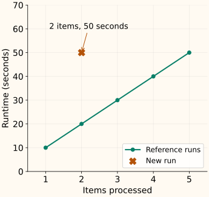

What Is an Outlier
An outlier is an observation that looks unusual relative to a chosen reference. The reference is part of the definition. A large measurement is not automatically an error, and a small measurement can be highly unusual in the right context.
Before choosing a detector, decide what should normally be comparable: all rows, the same type of device, a particular customer, or the recent behavior of one process. That choice often matters more than the threshold.
The same value can be ordinary in one context
Suppose two kinds of endpoint have these reference latencies: quick calls take [9, 10, 11] milliseconds, while reports take [90, 100, 110]. A new latency of 100 ms is close to the report reference and far from the quick-call reference.
For this toy example, score the absolute difference from the reference median. Let $x$ be the new latency, $c$ its endpoint type, and $m_c$ the median for that type. The score, still measured in milliseconds, is
Use a review threshold of 20 ms for illustration. This threshold is a stated rule for the example, not a universal outlier criterion or a learned probability of failure.
A mixed population can hide this structure. If you pool endpoint types, the detector sees two ordinary latency ranges without knowing which range belongs to which request. Keeping the type allows it to ask the more useful question.
Point, contextual and collective anomalies
| Pattern | What is unusual? | Example |
|---|---|---|
| Point | One observation relative to its reference population. | A sensor reading far outside the usual operating range. |
| Contextual | A value relative to its circumstances. | A 100 ms quick call, even though 100 ms reports are ordinary. |
| Collective | A related group or sequence, possibly with ordinary individual values. | A sensor repeating exactly the same plausible reading for an hour when normal operation fluctuates. |
Collective detection needs a representation of the relationship, such as a time window or run length. A detector that independently examines individual values cannot see that they have been stuck in an implausibly long sequence. These distinctions follow the taxonomy in Chandola, Banerjee and Kumar’s survey.
Ordinary columns can form an unusual pair
In the reference below, processing more items takes more time. The new run has an ordinary item count and a runtime already seen elsewhere, but their combination departs from the reference relationship.

This is why z-score and IQR flags on separate columns answer a narrower question than detectors that use several features together. More dimensions are not automatically better, however: irrelevant features and inappropriate scales can obscure useful comparisons.
Unusualness, error and influence are different questions
Unusualness asks whether a row fits the reference pattern. Data quality asks whether it was measured or recorded correctly. Influence asks how much it changes a fitted model or statistic. One row may satisfy any combination of these descriptions.
A verified unit conversion error can justify correction. A valid rare operating condition may be essential to the task. In an anomaly-detection application, the unusual observations may be exactly what you want to preserve and investigate. NIST distinguishes flagging observations from accommodating or identifying outliers.
Keep detection separate from treatment
For deployment monitoring, fit on a reference period and score future observations with that reference. For cleaning a dataset that already contains suspicious rows, the fitting problem is different: those rows can affect the reference itself. Scikit-learn calls these settings novelty detection and outlier detection, respectively; the LOF chapter shows why the distinction affects API usage.
A minimal context-aware scorer
The code below learns only the group medians. It retains the measured value and returns a score plus a flag. An unknown group has no fitted reference and raises an error rather than silently borrowing another group’s center.
Python: fit group medians and score a future observation
from statistics import median
reference = {"quick": [9., 10., 11.], "report": [90., 100., 110.]}
centers = {group: median(values) for group, values in reference.items()}
def score(latency, group):
distance = abs(latency - centers[group])
return distance, distance > 20
for group in ["quick", "report"]:
print(group, score(100., group))
quick (90.0, True)
report (0.0, False)C++: use the fitted centers with the same rule
#include <cmath>
#include <iostream>
#include <map>
#include <string>
int main() {
const std::map<std::string, double> centers{{"quick", 10.}, {"report", 100.}};
const double latency = 100.;
for (const std::string group : {"quick", "report"}) {
const double distance = std::abs(latency - centers.at(group));
std::cout << group << ": distance=" << distance
<< ", flag=" << std::boolalpha << (distance > 20) << "\n";
}
}
quick: distance=90, flag=true
report: distance=0, flag=falseThis simple rule is deliberately limited: it uses one center and one fixed tolerance, not a full model of variability. Continue to z scores to express distance in units of a fitted spread, or treatment choices if the question is what to do after a flag.
References and further reading
- NIST: detection of outliers — distinguishing potential outliers, data errors and robust analysis.
- Chandola, Banerjee and Kumar: Anomaly Detection—A Survey — point, contextual and collective anomaly definitions, especially Section 2.2.
- Scikit-learn: novelty and outlier detection — different reference-data assumptions and score/label interfaces.